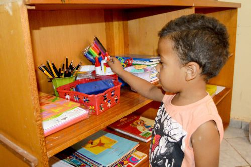

Projeto Viver Bem
As crianças atendidas na organização têm acesso às refeições principais do dia.

Projeto Atenção Total
Para ajudar no desenvolvimento escolar, o projeto oferece reforço escolar, aulas de leitura e de artes, além de atividades recreativas.
Precisamos melhorar muito! Infelizmente ainda não temos condições suficientes para expandir as atividades do projeto. Por isso, role a tela e veja como você pode nos ajudar: